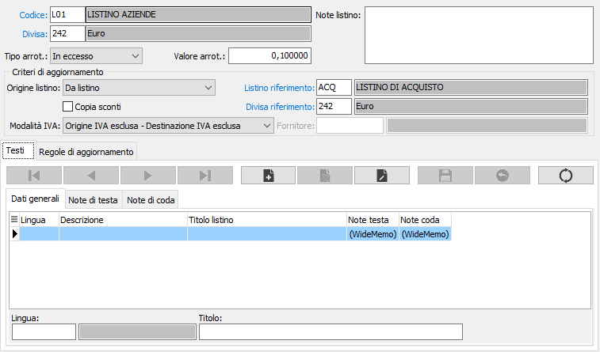
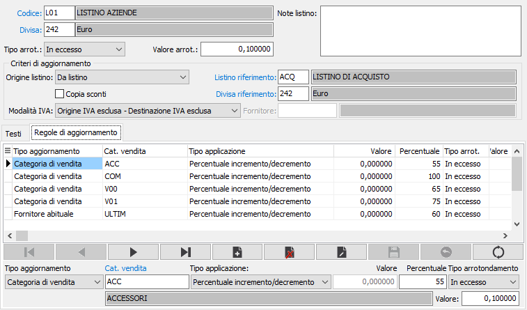

Definizioni listini
Il programma permette di definire le associazioni tra listino e divisa impostando i criteri di arrotondamento e le diciture da utilizzare nella manutenzione e nella stampa del listino.
E' anche possibile, solo per i listini di vendita, creare i listini a partire da un listino di acquisto al quale vengono applicate in automatico percentuali o valori assoluti di incremento per determinare il prezzo; l’assegnazione può essere fatta per categoria merceologica, per categoria di vendita, per fornitore abituale o per singolo prodotto.
L’aggiornamento dei listini di vendita collegati viene effettuato automaticamente alla variazione del prezzo di acquisto, da qualsiasi parte questo venga aggiornato (manutenzione listini, manutenzione prodotti, variazione prezzi da documenti).

CODICE: indica il codice della tipologia del listino di appartenenza. Sul campo sono attive le funzioni di ricerca (F9), sulla tabella tipologia listini solo se in inserimento, altrimenti sulla tabella stessa Definizione listini.
DIVISA: indica il codice della divisa da associare al codice del listino per generare la definizione del listino. Sul campo sono attive le funzioni di ricerca (F9), sulla tabella Divise.
TIPO ARROTONDAMENTO: definisce il metodo di arrotondamento del listino-divisa: matematico, per eccesso o per difetto.
VALORE ARROTONDAMENTO: definisce il valore da utilizzare per effettuare l'arrotondamento dei prezzi.
NOTE LISTINO: campo note relative al listino-divisa appena definito.
ORIGINE LISTINO: definisce gli eventuali criteri di aggiornamento del listino:
Manuale: il listino deve essere inserito manualmente.
Da listino: il listino deriva da un listino di acquisto, in questo caso sarà specificata l'associazione Listino/Divisa di origine nei campi successivi;
Da listino speciale: il listino deriva da un listino speciale di un fornitore, in questo caso sarà specificata l'associazione Divisa/Fornitore di origine nei campi successivi;
COPIA SCONTI: indica se in fase di aggiornamento/riallineamento listini devono essere copiati anche gli sconti oltre al prezzo (casella con segno di spunta).
MODALITÀ IVA: Definisce come considerare i prezzi, sia del listino di riferimento che del listino corrente, per quanto riguarda l'applicazione dell'aliquota IVA del prodotto in fase di aggiornamento. Sul listino di riferimento determina, se si tratta di un prezzo IVA compreso o meno, sul listino corrente determina se il prezzo deve essere comprensivo di IVA oppure no.
Origine IVA esclusa - Destinazione IVA esclusa: il prezzo non è comprensivo di IVA sul listino di riferimento, né dovrà essere calcolata l'IVA del prodotto sul listino corrente.
Origine IVA compresa - Destinazione IVA compresa: il prezzo è comprensivo di IVA sul listino di riferimento e sarà aggiunta l'IVA del prodotto anche sul listino corrente.
Origine IVA compresa - Destinazione IVA esclusa: il prezzo è comprensivo di IVA sul listino di riferimento e non dovrà essere calcolata l'IVA del prodotto sul listino corrente.
Origine IVA esclusa - Destinazione IVA compresa: il prezzo non è comprensivo di IVA sul listino di riferimento, ma dovrà essere calcolata l'IVA del prodotto sul listino corrente.
LISTINO DI RIFERIMENTO: valido solo per origine da listino: indicare il codice del listino di acquisto da cui deve essere generato il listino di vendita. Sul campo sono attive le funzioni di ricerca (F9).
DIVISA DI RIFERIMENTO: indicare il codice della divisa relativa al listino oppure collegata al fornitore, in base all'origine del listino, da cui deve essere generato il listino di vendita. Sul campo sono attive le funzioni di ricerca (F9).
FORNITORE: valido solo per origine da listino personalizzato: indicare il codice del fornitore dal cui listino speciale deve essere generato il listino di vendita. Sul campo sono attive le funzioni di ricerca (F9).
La parte inferiore contiene due pagine una per i Testi che contiene la definizione del titolo e delle note relative al listino appena definito, che compariranno in fase di stampa, l'altra attiva solo per i listini di vendita derivati che contiene le Regole di aggiornamento.
Testi
LINGUA: indica la lingua a cui si riferiscono il titolo e le note del listino.
TITOLO: definisce il titolo del listino, nella lingua selezionata, da utilizzare in fase di stampa.
NOTE DI TESTA: eventuali note, nella lingua selezionata, da utilizzare in fase di stampa e stampare prima del corpo del listino.
NOTE DI CODA: eventuali note, nella lingua selezionata, da utilizzare in fase di stampa e stampare dopo il corpo del listino.
Regole di aggiornamento
Le regole di aggiornamento intervengono al momento della generazione/aggiornamento del listino di vendita; è possibile apportare variazioni automatiche al prezzo di base in relazione alla categoria di vendita, alla categoria merceologica, al fornitore abituale del prodotto, al codice di un singolo prodotto oppure senza distinzioni, regola generica (attuabile inserendo nelle regole un rigo con “Tipo aggiornamento” impostato a “Tutti”), presenti nel listino origine. In presenza di più regole, viene prima effettuata la scansione per categoria vendita, categoria merceologica, fornitore abituale, prodotto e se nessuna regola è stata trovata viene applicata la regola generica.
Le variazioni possono essere a valore oppure in percentuale ed è possibile definire anche il criterio ed il valore di arrotondamento.
Nel caso in cui il listino di acquisto venga acquisito dal programma di importazione listini oppure vengano modificate le maggiorazioni applicate è possibile ricalcolare automaticamente tutti i listini di vendita collegati attraverso l’apposita funzione di Riallineamento listini.
